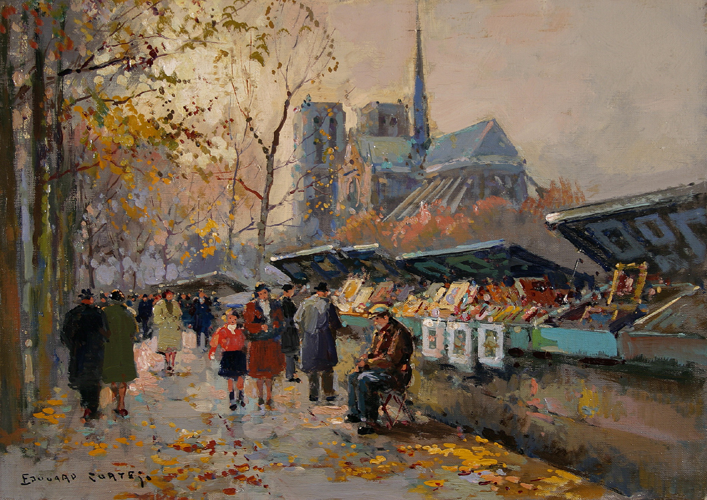

Paryscy bukiniści
Czasami przechodzę koło sklepików, gdzieś w okolicy rue de Seine. Handlarze sztychów albo starych książek z przepełnionymi wystawami. Nikt nigdy do nich nie zachodzi… Siedzą i czytają, bez kłopotu; nie troskają się o jutro, nie boją się niepowodzeń… Mam czasem ochotę kupić sobie taką przepełnioną wystawę książek i usiąść za nią z psem na dwadzieścia lat.
— Rilke na kartach Maltego, przeł. W. Hulewicz
Edouard Leon Cortes „Bouquinistes de Notre-Dame”